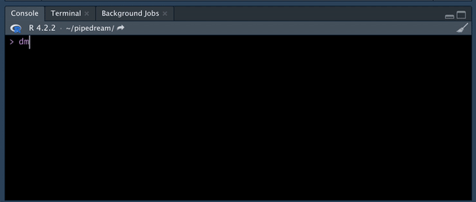

Setting up macOS as an R data science rig in 2023
TL;DR
In this post, we cover our preferred setup for R on macOS going into 2023. We highlight these awesome tools: Homebrew, Git, zsh, Oh My Zsh, rig, the R packages {usethis} and {gitcreds}, and Quarto.
If you prefer to look at a short list than read through a long-form blog post, much of the information below is summarized in this dotfiles repository. Keeping your own dotfiles repository, or bookmarking this post or others, will help you stay sane next time you are setting yourself up for data science in R on a brand new macOS installation.
The Problem
Like a new year 🗓️, a new computer 🖥️ (or a fresh reinstall) can bring so many opportunities. A clear desktop! So much memory! And then you remember that you have to install and configure all of your programs again, and that initial excitement gives way to despair and hopelessness. 😱
Okay, that’s a bit of an exaggeration, 🤭 but it can be tedious to reconfigure your setup the way that you like it. However, by using dotfiles, or hidden configuration files (whose names start with a dot/period, which on macOS hides them from view in the Finder), you can store your user preferences on a hosted version control service like GitHub. By dropping dotfiles in the correct directory, you can access and reuse your exact configuration and settings across machines, saving time and hassle. ♻️
In this post, we’ll share some helpful dotfiles for all you RStudio users who are rocking a new macOS 🍎 installation in 2023. This post is geared towards you if:
- You’ve been installing R and RStudio on macOS and setting them up in your own way already, but either forget the many steps (Git, etc.) or are always having to relearn them;
- You do a lot of point-and-click downloading of files for installation, and have been considering jumping into command-line adventures 👩🏻💻 with Homebrew;
- You’ve never heard of rig;
- You want a one-stop-shop for setting up your rig next time;
- You have a well-oiled, well-defined workflow but are interested in seeing how others set up their machines, to perhaps learn something new!
Since it is the year of ChatGPT, we did ask its suggested setup. We thought we could do better (at least for now, maybe not in 2024)! 🤗
Let’s fall into a pit of success TM (when configuring macOS)!

Installation
We’re going to use Homebrew to facilitate installation steps on macOS. Homebrew styles itself as ‘the missing package manager for macOS.’
- Open Applications > Utilities > Terminal. Install Homebrew using the terminal command below, also provided on the Homebrew landing page. Paste this code into your terminal and hit enter:
/bin/bash -c "$(curl -fsSL https://raw.githubusercontent.com/Homebrew/install/HEAD/install.sh)"- Install Git. This version control system is going to come in handy for future projects on your new installation.
brew install git- Configure global Git settings.
Run the code below (replacing the text in the quotation marks with your information) to adjust your Git settings.
git config --global user.name "<full-name>"
git config --global user.email "<email>"- Install zsh.
Several years back, macOS switched from using the bash shell to using zsh as the default shell. Installing the latest version of zsh from Homebrew gives you the latest version — otherwise, zsh and Git are both stuck at the version bundled the last time you updated macOS — which makes them open to vulnerabilities and/or don’t have the latest features.
brew install zsh- Install Oh My Zsh.
Oh My Zsh (OMZ) is ‘a delightful & open source framework for Zsh.’ Or as ChatGPT succinctly put it:
It comes with a ton of plugins, themes, and functions. For most users, having the great themes available from OMZ are enough to switch. But for us, the real value is all the built-in OMZ plugins — which provide a rich set of aliases for Homebrew, Git, and many other command-line programs. For example, gs is git status, bubo is brew update && brew outdated (very helpful), etc. Here are some you should know:
- The brew plugin and its aliases
- The git plugin
- The macos plugin for easier living through the Terminal
- There’s even a plugin that reminds you what your aliases are! – for maximum discoverability
You can also hand-code your themes into your .zshrc dotfile instead of using the OMZ themes. The aliases not provided by OMZ can be added to the custom.zsh dotfile, such as the ones in the dotfiles linked below.
Install OMZ with:
sh -c "$(curl -fsSL https://raw.github.com/ohmyzsh/ohmyzsh/master/tools/install.sh)"- Configure Oh My Zsh.
To configure oh-my-zsh, you can:
- Edit your settings: Navigate to your home directory
~/and edit the.zshrcfile. - Use preconfigured settings: Navigate to your home directory
~/. Replace the default.zshrcfile with this file. Then, navigate to the hidden folder~/.oh-my-zsh/customand drop this file in the folder.
On a Mac, you can press Command + Shift + . to see your hidden folders.
A custom.zsh file might be helpful because you can add many more commands for OMZ plugins than what are built in. For instance,
alias bog="brew outdated --greedy"This allows you to use bog to run brew outdated --greedy, instead of having to type the whole command out. That particular command is helpful if you want to find ALL the programs that could potentially be upgraded.
- Go back to the Terminal and install rig.
rig, the ‘R Installation Manager,’ is an amazing tool. It not only lets you download R, but install, configure, switch between, and remove multiple R versions. It also allows you to manage user-level package libraries (meaning you can delete a version of R without losing all your packages!). Mara Averick wrote a great summary on Day 10 of Tidy Advent 2022.
Install rig by running these commands in the Terminal:
brew tap r-lib/rig
brew install --cask rig- Install R.
Install the latest version of R using rig:
rig add release- Install RStudio Desktop.
You want the latest and greatest RStudio, no? Use Homebrew to download and install the latest version. Once a new version is released, the community is very quick at updating the cask entry for RStudio in Homebrew.
brew install --cask rstudio- Configure
.Rprofile.
In RStudio, install the {usethis} package, a tremendous tool for increased productivity with your R projects. In other words, you should use {usethis}. 😀
install.packages(“usethis”)Once installed, open your .Rprofile by running:
usethis::edit_r_profile()Here’s an example of an .Rprofile script. This script [1] sets {devtools} and {usethis} to load with each R session (to write install_github() without a library(devtools)), [2] sets Posit Public Package Manager (P3M) as the default repo for Linux (not relevant for this macOS guide), [3] sets a bunch of {usethis} defaults for package development which need to be overridden with personal details for each person, [4] sets vsc.rstudioapi = TRUE for VS Code (again not relevant for this guide), [5] sets several strict warnings which are helpful when developing packages (e.g., not using partial argument matching).
For your rig configuration, you would create a similar script, edit the .Rprofile, and restart the session.
- Configure RStudio.
Snippets help quickly insert common short pieces of code. Open RStudio’s snippet config for R scripts:
usethis::edit_rstudio_snippets("r")Append this script to the bottom of the file for some useful examples.
Change the prefix of your snippets to your initials. The default in these examples is gv.
Try a snippet out! After appending the script to your snippet file, type dml in the Console and press tab:

Now, open RStudio’s preference file by running:
usethis::edit_rstudio_prefs()Add the content of this file to the rstudio-prefs.json file. This file configures RStudio to look and act the way that you’d like (rainbow parentheses, anybody?). 🌈
- Change
default_project_locationto your preferred directory. The default in this example is~/code. - Change
git_exe_pathto the location of your Git executable, which can be found by typingwhich gitin a terminal. The default in this example is/usr/local/bin/git. - Change document_author to your name. The default in this example is
gvelasq.
Finally, add the contents of rstudio_bindings.json to the local version found in this hidden folder (I don’t think there’s a {usethis} command for this, unfortunately!):
~/.config/rstudio/keybindings/rstudio_bindings.jsonNow, anytime you want to make sure you’re using the most current version of RStudio, you just have to run Shift+Cmd+R!
- Set Git credentials in R.
The {gitcreds} package allows you to set your GitHub token once and use it everywhere (Git, R, and the RStudio IDE). Use it to set up RStudio with a Personal Access Token (PAT) with GitHub and have it work every time.
Install the {gitcreds} package:
install.packages("gitcreds")Then, run usethis::create_github_token() to open a browser window to the GitHub form to generate a PAT with suggested, pre-selected scopes. This helps you make the right choice of scopes every time.
usethis::create_github_token()Then, the command will suggest to use gitcreds::gitcreds_set() to save the PAT locally using the macOS Git credential manager (after copying it from GitHub):
gitcreds::gitcreds_set()- Install Quarto.
Quarto is a (kinda new) open-source scientific and technical publishing system built on Pandoc. It allows you to create dynamic content with R and Python, like documents, websites (like this blog!), and presentations.
Quarto comes bundled with RStudio v. 2022.07 and later, so the installation in step 9 above should have this covered. But, if you’d like to install Quarto yourself, run this in your Terminal:
brew install --cask quartoYou’ve done it! Congratulations on your configured, custom R data science setup.
Final Thoughts
We hope that this post is helpful in setting up an R data science rig on macOS! We know there were a lot of steps. In summary:
- Dotfiles are hidden configuration files where you can store your user preferences and use them across machines and installations.
- The configuration steps above ensure that you’re using the best tools for the macOS terminal: Homebrew (for package management) and zsh (for execution).
- They also ensure you’re using the best tools for running analyses: Git (for version control), rig (for R versioning), R (the best programming language [in our humble opinion]), RStudio (the GOAT), {usethis} (for project setup and development), {gitcreds} (for managing Git), and Quarto (for content creation and publishing).
- Tools like OMZ and snippets help you use aliases that make running your workflow easier to remember.
We know there are a ton of ways of setting up a data science rig, and we’d love to learn about your dotfile repositories, best practices, or favorite workflow packages on Twitter/Mastodon!
Liked this article? I’d love for you to share!
Where we have ChatGPT write our blog post for us
Here’s ChatGPT’s not bad (but still unnerving) response to: ‘Write a blog post, for a technical blog about the R programming language, entitled “Setting up macOS as an R data science rig in 2023.” Include installation and configuration examples for Homebrew, Git, zsh, oh-my-zsh, R, RStudio, and Quarto.’
See response.
As a data scientist, it is important to have a reliable and efficient setup for your work environment. In this tutorial, we will walk through the steps of setting up macOS as an R data science rig in 2023. We will cover the installation and configuration of Homebrew, Git, zsh, oh-my-zsh, R, RStudio, and Quarto. By the end of this tutorial, you will have a fully functional and customizable R development environment on your Mac.
Step 1: Install Homebrew
Homebrew is a package manager for macOS that makes it easy to install and manage software on your Mac. To install Homebrew, open a terminal window and paste the following command:
/usr/bin/ruby -e "$(curl -fsSL https://raw.githubusercontent.com/Homebrew/install/master/install)"Hit enter and follow the prompts to complete the installation.
Step 2: Install Git
Git is a version control system that allows you to track changes to your code and collaborate with others. To install Git using Homebrew, run the following command in the terminal:
brew install gitStep 3: Install zsh and oh-my-zsh
zsh is a shell (command line interface) that allows you to execute commands on your computer. oh-my-zsh is a framework for managing your zsh configuration. To install zsh and oh-my-zsh, run the following commands in the terminal:
brew install zsh
sh -c "$(curl -fsSL https://raw.github.com/ohmyzsh/ohmyzsh/master/tools/install.sh)"Step 4: Install R
To install the latest version of R on your Mac, run the following command in the terminal:
brew install rStep 5: Install RStudio
RStudio is a popular integrated development environment (IDE) for R. To install RStudio, visit the RStudio website (https://rstudio.com/) and download the latest version for Mac. Once the download is complete, open the downloaded file and follow the prompts to complete the installation.
Step 6: Install Quarto
Quarto is a powerful tool for creating reproducible research documents in R. To install Quarto, run the following command in the terminal:
install.packages("quarto")Conclusion:
By following the steps outlined in this tutorial, you should now have a fully functional and customizable R development environment on your Mac. With Homebrew, Git, zsh, oh-my-zsh, R, RStudio, and Quarto installed and configured, you are ready to start your data science journey with R on macOS. Happy coding!
We told you it was unnerving 👀